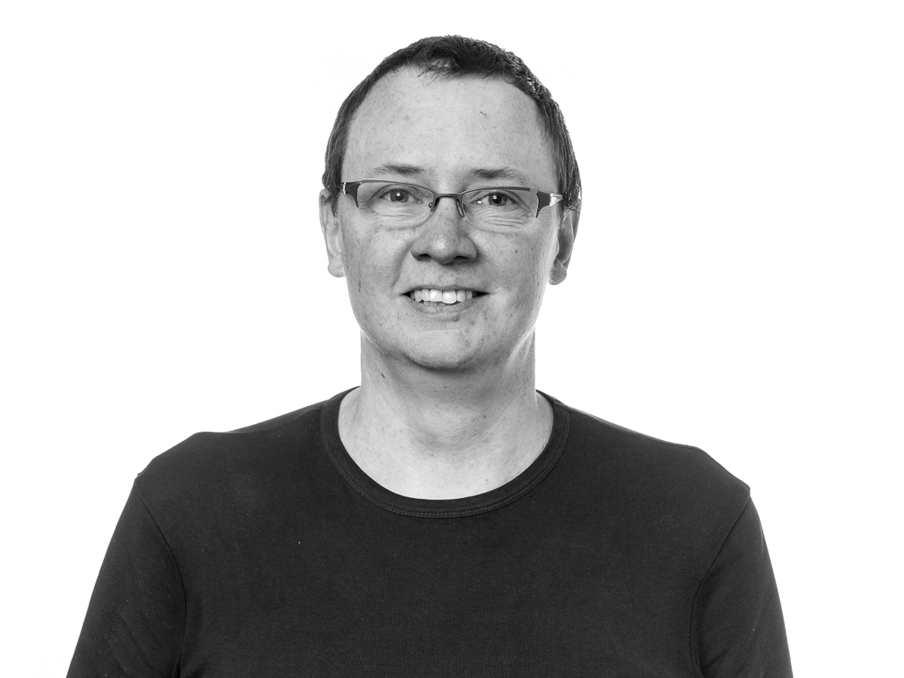

|

|
Team leder / Scientific engineer (Physicist, PhD)
Bo Jakobsen
boj@ruc.dk
Phone:(+45) 46 74 26 30
Skype: bojatruc
Orcid: 0000-0002-4018-6431
IMFUFA, Department of Science and Environment
Building 27
Roskilde University RUC
Postbox 260
DK-4000 Roskilde
Denmark.
Main responsibilities:
- Team leder for technical employees in
inm
workshops , center for high
performance computing, and
RUCSAXS
- Participate / manage scientific equipment development projects
- Hardware/software integration of scientific equipment
- Procurement and commissioning of scientific equipment
- Daily laboratory manager
|